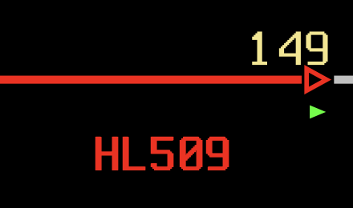

Web-based simulation of Indian Railway Section Controller operations
This page lists the most basic instructions to run the train traffic. For more detailed information, see the other pages as well.
Most of the signals are in automatic mode and the Section Controller doesn't need to intervene. However, some of them require the input of the Section Controller because the trains have different destinations. Here's a list of them:
Express trains (12xxx series) from NDLS should be routed to signal 201.
Mail trains (13xxx series) from NDLS should be routed to signal 303.
All incoming trains should be routed to signal 154.
All incoming trains should be routed to signal 154.
Passenger trains (15xxx series) should be routed to signal 350.
Freight trains (19xxx series) should be routed to signal 352.
All trains should be routed to signal 111.
All trains should be routed to signal 111.
When needed, automatic signals can be taken under manual control by following these steps:
After this, they can be taken to the automatic mode by following these steps:
Please note that the automatic signals only open routes when a train passes them. This means that the first route after the signal is taken to the automatic mode should be opened manually.

All trains are described with their 5-digit Indian Railway train numbers. Express trains start with 12xxx, Mail trains with 13xxx, Passenger trains with 15xxx, and Freight trains with 19xxx series.
Train numbers remain constant throughout their journey. Here's a table that lists the train series:
| Train Series | Type | Description |
|---|---|---|
| 12xxx | Express | Premium Express Services |
| 13xxx | Mail/Express Services | |
| 15xxx | Passenger | Passenger Services |
| 19xxx | Freight | Freight Services |
Special train numbers starting with "0" indicate empty coaching stock or light engine movements to/from depot.
Trains can be renamed using the following commands:
Example: TND 12301 12302
Example: STG 103 12301

Commands are typed to the terminal, which is placed at the bottom right of the screen. To execute a command, hit Enter.
Errors from the commands are shown on the left side, with the red color.